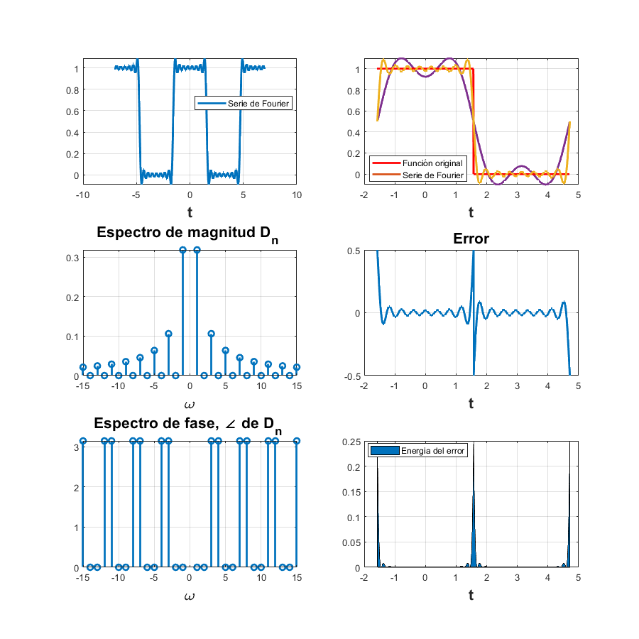
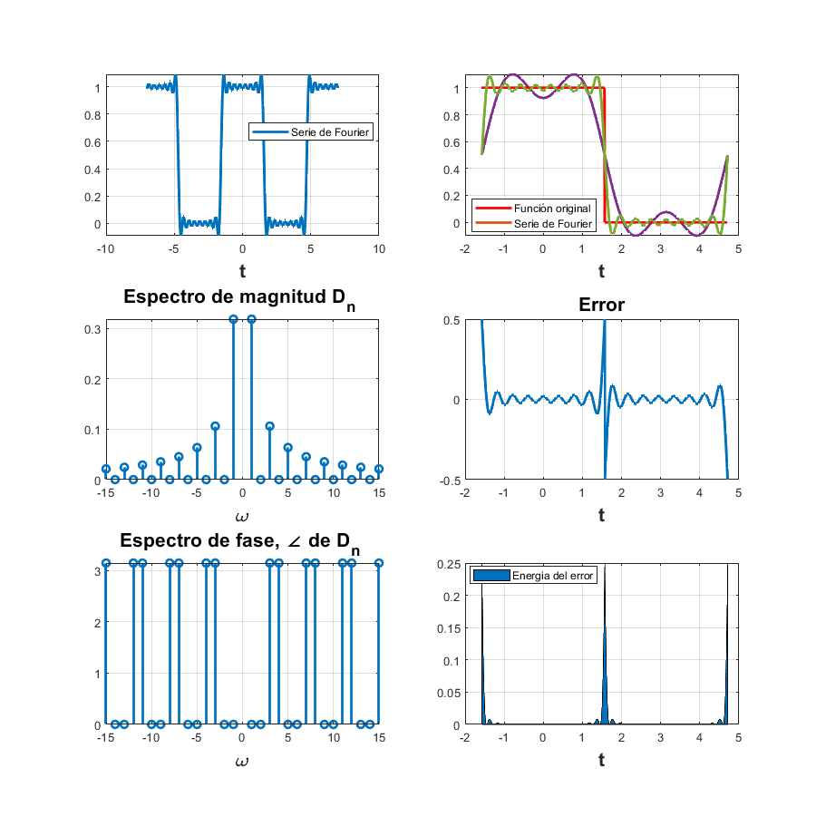

Práctica 05: Series de Fourier en tiempo continuo
Integrantes:
José Ángel Sánchez Cortés
José Antonio Vásquez Pineda
Josué Daniel Torres Lira
María Alejandra Marulanda Villasmil
Oscar Castañeda Ibañez
Contents
Objetivos
- Realizar gráficas de series de Fourier exponenciales y trigonométricas en tiempo continuo
- Manipulación de instrucciones en MATLAB
Función utilizada para los ejemplos.
function sfc(t0,tf,dn,d0,f,armo,a,b) % t0 el valor inicial para calcular la serie % tf el valor final donde calcular la serie % dn función de la fórmula de los dn % f función original % armo número de armonicos a utilizar en la gráfica % a, b intevalo para realizar la grafica de la serie w0=2*pi/(tf-t0); sf=d0; t=a:0.00001:b; for n=1:armo sf=sf+dn(-n)*exp(w0*-n*t*j)+dn(n)*exp(w0*n*t*j); end figure (1) hFig = figure(1); set(hFig, 'Position', [0 0 900 900]) subplot(3,2,1) plot(t,sf,'LineWidth',2) grid on legend('Serie de Fourier','Location','Best') xlabel('t','FontWeight','bold','FontSize',16) sf=d0; t1=t0:0.00001:tf; for n=1:armo sf=sf+dn(-n)*exp(w0*-n*t1*j)+dn(n)*exp(w0*n*t1*j); end subplot(3,2,2) plot(t1,f(t1),'r','LineWidth',2) grid on hold on plot(t1,sf,'LineWidth',2) legend('Función original','Serie de Fourier ','Location','Best') xlabel('t','FontWeight','bold','FontSize',16) nn=-armo:armo; axis auto subplot(3,2,4) e=f(t1)-sf; plot(t1,e,'LineWidth',2) title('Error','FontWeight','bold','FontSize',16) xlabel('t','FontWeight','bold','FontSize',16) axis auto grid on subplot(3,2,6) e=f(t1)-sf; area(t1,e.^2) legend('Energia del error','Location','Best') xlabel('t','FontWeight','bold','FontSize',16) axis auto grid on absdn=zeros(1,length(nn)); cont=1; for i =-armo:armo if i==0 absdn(cont)=d0; end absdn(cont)=dn(i); cont=cont+1; end subplot(3,2,3) stem(w0*nn,abs(absdn),'LineWidth',2) title('Espectro de magnitud D_n ','FontWeight','bold','FontSize',16) xlabel('\omega','FontWeight','bold','FontSize',16) grid on subplot(3,2,5) % % stem(w0*nn,angle(absdn),'LineWidth',2) % % title('Espectro de fase, \angle de D_n ','FontWeight','bold','FontSize',16) % % xlabel('\omega','FontWeight','bold','FontSize',16) grid on end
Ejemplo 6.2 Agregar la expresión análitica de la serie en ambos formatos. Utilizar A =1.
u = @(t) 1.0.*(t>=0); f = @ (t) -u(t-(pi/2))+u(t+(pi/2))+ 0*t; d0=0.5; dn= @(n) (1/(pi*(n))*sin(n*pi/2)); t0=-pi/2; tf=3*pi/2; armo=15; a=-7; b=7; sfc(t0,tf,dn,d0,f,armo,a,b)
Ejemplo 6.4 Agregar la expresión análitica de la serie en ambos formatos.
u = @(t) 1.0.*(t>=0); f = @ (t) -u(t-(pi/2))+u(t+(pi/2))+ 0*t; d0=0.5; dn= @(n) (1/(pi*(n))*sin(n*pi/2)); t0=-pi/2; tf=3*pi/2; armo=15; a=-7; b=7; sfc(t0,tf,dn,d0,f,armo,a,b)